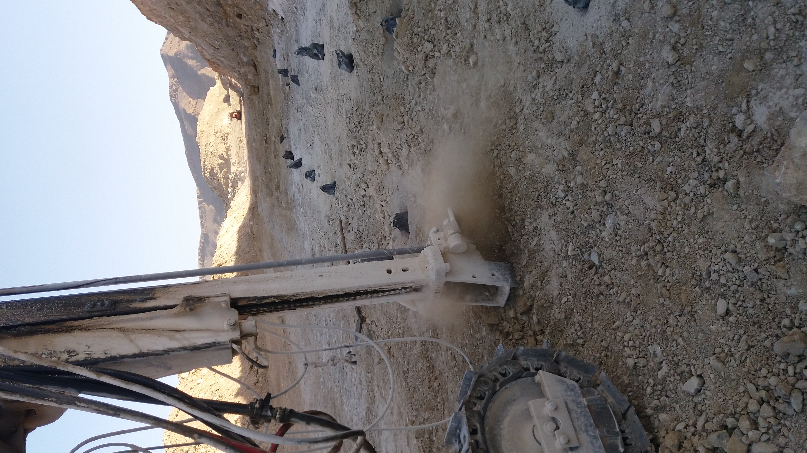
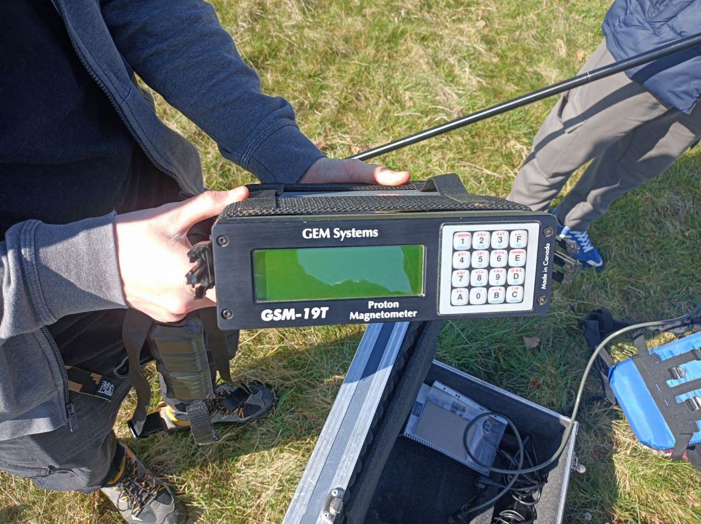

← Zurück zu Projekte
Geotechnik & Geophysik
Feldarbeit, Messungen und technische Einblicke
Einblicke in geotechnische Feldarbeit, geophysikalische Messungen und praktische technische Tätigkeiten.




